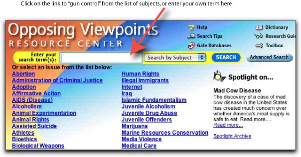

|
Gun Control:
Selected Resources |
| Contents: | ||||
| Find Reference Books | Find Books to Check Out | Find Articles | Find Web Sites | Cite Your Sources |
| FIND REFERENCE BOOKS |
|
|
The following reference books, located in the LAC Reference Room, provide an excellent overview on the gun control debate. | |||
| General | ||||
| Gun Control: a Reference Handbook | ref HV 7436 .K78 | |||
| The Gun Control Debate: a Documentary History | ref HV 7436 .G865 | |||
| Gun Control: Resisting Rights or Protecting People? | ref HV 7436 G86 | |||
| From an historical perspective | ||||
| Civil Rights in the United States | ref E 184 .A1C47 | |||
| A Dictionary of American History | ref E 174 .D52 | |||
| From a legal perspective—the Second Amendment | ||||
| American Justice | ref KF 154 .A44 | |||
| Encyclopedia of Constitutional Amendments | ref KF 4557 .V555 | |||
| Encyclopedia of the American Constitution | ref KF 4548 .E53 | |||
| West's Encyclopedia of American Law | ref KF 4548 .W47 | |||
| From a social perspective | ||||
| Encyclopedia of Social Issues | ref HN 57 .E59 | |||
| Violence in America | ref HV 6017 .E52 | |||
| From a criminological perspective | ||||
| Encyclopedia of Crime & Justice | ref HV 6017 .E52 | |||
| From an ethical perspective | ||||
| Encyclopedia of Applied Ethics | ref BJ 63 .E44 | |||
| Statistics | ||||
| The Gallup Poll | ref HN 90 .P8 G3 | |||
| Statistical Abstract of the United States | ref desk HA 202 .S7 | |||
| Statistical Handbook on Violence in America | ref HN 90 .V5 S833 | |||
| Statistics on Weapons & Violence | ref HN 90 .V5 S834 | |||
| FIND BOOKS AND E-BOOKS TO CHECK OUT |
| To find resources on gun control, try entering a keyword or subject search in the Library’s online catalog, Voyager. Keyword search tips: Use quotes to search phrases. Use + to mark required terms. Use ? with partial words to find all possible variant endings. |
| "assault weapons" | [Keyword Search] | |
| gun control United States | [Subject Search] | |
| firearms law and legislations United States | [Subject Search] | |
| firearms ownership United States | [Subject Search] |
| Since LBCC Library has a partnership agreement with CSULB, you may check out books from the University Library. To identify books, search CSULB's online catalog, called Coast, which is accessible over the Web at http://coast.csulb.edu. |
| FIND JOURNAL ARTICLES |
| The Library subscribes to a number of online databases, which are accessible over the World Wide Web, from remote computers or those located in the Library. These databases index and abstract articles, and in many cases, provide the full text, enabling you to print a copy at a cost of $.10 per page or e-mail them to yourself for free. Most of the databases are password-protected. You can pick up a list of current passwords at the Reference Desk. For your assignment, Opposing Viewpoints, CQ Researcher, SIRS, and ProQuest would be especially useful. To access these databases, go to the Library's homepage at http://lib.lbcc.edu, click on "Online Databases," then select the database you want to search. Illustrated below is a screen shot from the Opposing Viewpoints database. |
|  |
| FIND WEB SITES | |||
| Use a subject directory, such as those listed below, to find annotated and reviewed listings of Web sites by subject. | |||
| Librarians' Index to the Internet (LII) |
http://www.lii.org | ||
| Infomine |
http://infomine.ucr.edu |
||
| Use a search engine to do a keyword search. | |||
| http://www.google.com | |||
| AltaVista | http://www.altavista.com | ||
| AllTheWeb |
http://www.alltheweb.com |
||
| When selecting additional Web sites for research, consult Five Criteria for Evaluating Web Pages to learn how to identify authoritative Web pages that are useful for research purposes. |
|||
| CITE YOUR SOURCES |
||
| Remember to list the sources used in your research in a bibliography or works-cited page following a documentation style, such as MLA (Modern Language Association) or APA (American Psychological Association). The most up-to-date guides for citing Web pages and other electronic sources in footnotes and bibliographies are on the Web, and they are accessible from the Library's homepage at http://lib.lbcc.edu. Click on "Internet Resources," then click on "Citation Guides." |
||
| Contents: | ||||
| Find Reference Books | Find Books to Check Out | Find Articles | Find Web Sites | Cite Your Sources |
E-mail questions and comments to mwhite@lbcc.edu
Monica White, Liberal Arts Campus Library
http://lib.lbcc.edu/monicawhite/orientations/gun-control.html
Last updated: March 8, 2004
| Back to Library homepage |